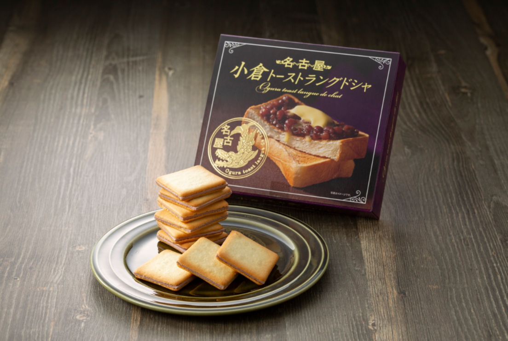
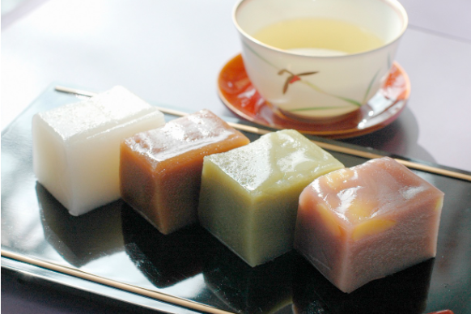
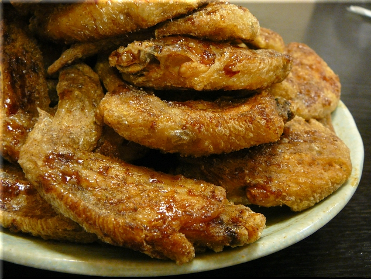
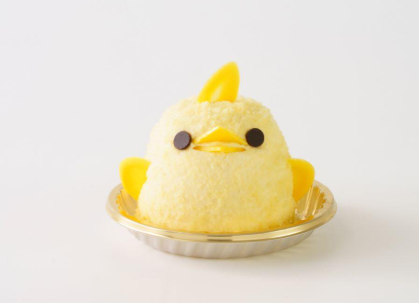
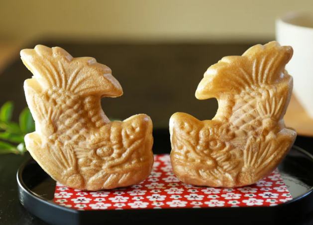
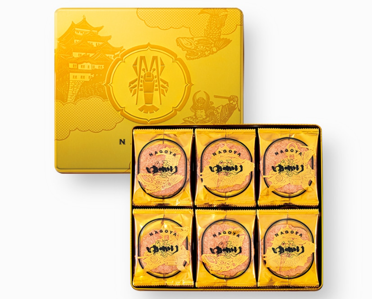
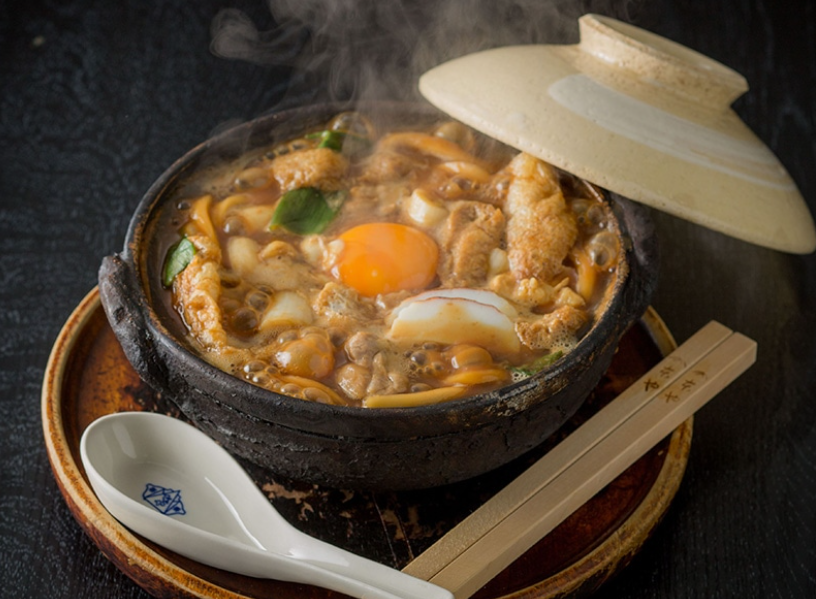
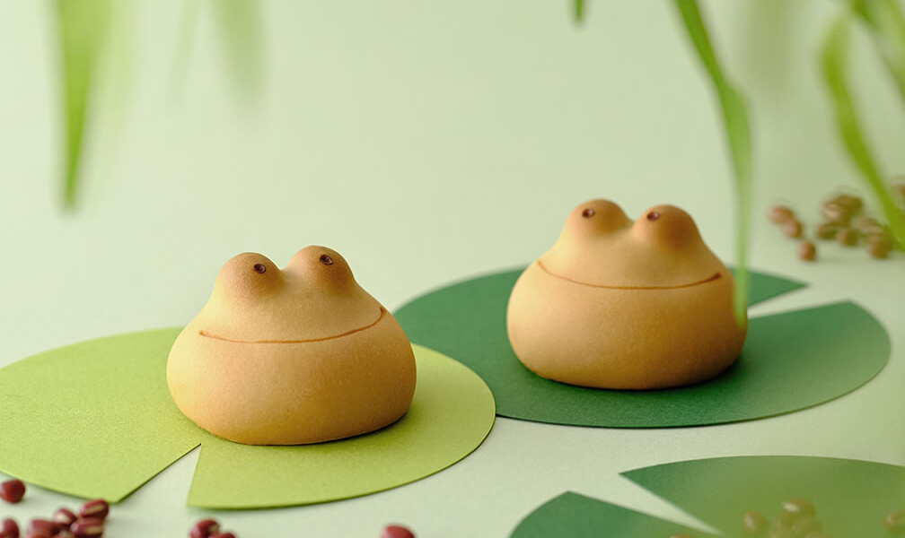
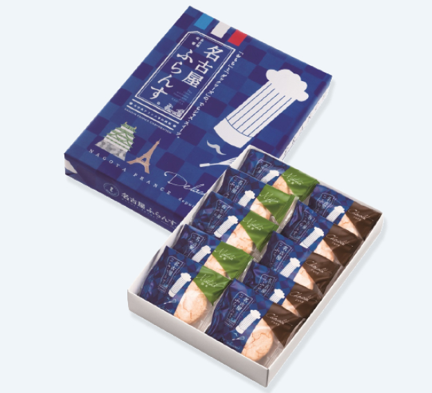

お土産
名古屋には、昔ながらの製法で作られる「ういろう」や、えびの香ばしさを楽しめる「ゆかり」、やさしい甘さが魅力の「ぴよりん」など、地域の食文化を感じられるお土産が数多くあります。味噌煮込みうどんや手羽先風味のお菓子といった名古屋めしを手軽に楽しめる商品も豊富で、家族や友人への贈り物はもちろん、旅の思い出として自分用に選ぶのもおすすめです。

小倉トーストラングドシャ
名古屋名物の小倉トーストがお洒落なラングドシャになりました。 マーガリンの香りと小倉の甘さが忘れられなくなるお菓子です。

ういろう
米粉や小麦粉、わらび粉などの粉に砂糖と湯水を練り合わせてせいろなどで蒸し上げた、もっちりした食感の伝統的な日本の蒸し菓子です。

世界の山ちゃん 幻の手羽先
ピリッとしたコショウが特徴の「幻の手羽先」で知られる、愛知県名古屋市発祥の有名な居酒屋チェーンです。

ぴよりん
愛知県の地鶏「名古屋コーチン」の卵を使ったプリンを、ババロアとスポンジの粉末で包んでひよこの形に仕上げた、名古屋の新名物スイーツです。

元祖 鯱もなか
名古屋城の金のしゃちほこをかたどった、100年以上の歴史を持つ名古屋の伝統的な和菓子です。香ばしい最中に、こだわりの甘いあんこが詰まっています。

ゆかり 黄金缶
坂角総本舗が販売する名古屋限定の海老せんべい「ゆかり」です。

生みそ煮込みうどん＜山本屋総本家＞
塩を使わずに打った生の太麺を、かつお節などの出汁と赤味噌（八丁味噌ベース）の汁でそのまま煮込む、名古屋を代表する伝統的な郷土料理。

カエルまんじゅう
愛知県名古屋市の老舗菓子店「青柳総本家」が販売する、カエルの形をしたかわいい焼きまんじゅうです。

名古屋ふらんす
フランス発祥の焼き菓子「ダックワーズ」でお餅とクリームを挟んだ、愛知県の有名なお土産スイーツです。